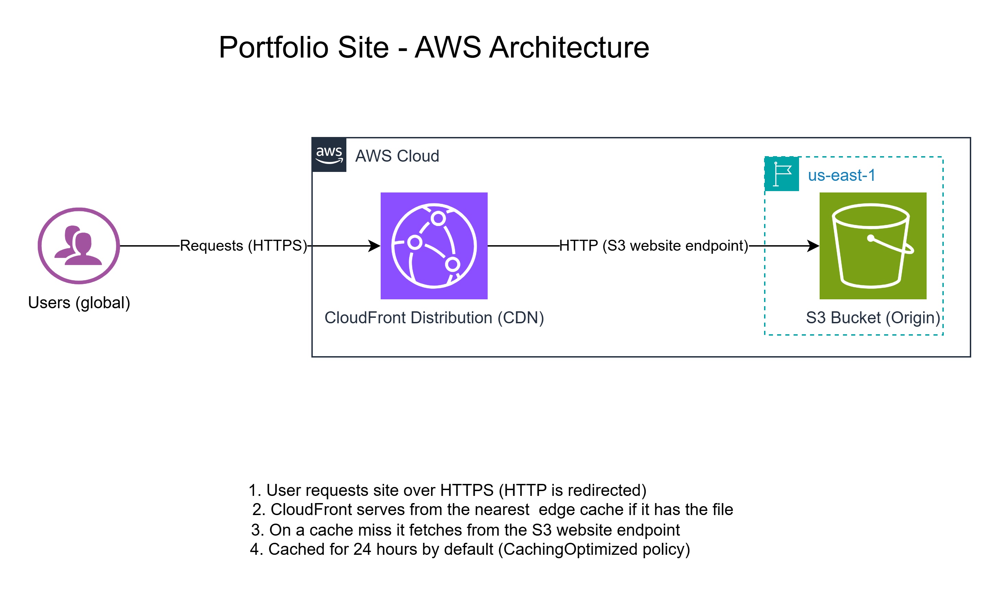

IT Support | Networking | AWS | KCNA Certified
I'm an IT support professional based in Nairobi, Kenya, with 2+ years of first-line troubleshooting: NOC incident response at the ICT Authority, field-system support at Kenya Power, and support for 30+ individual and small-business clients.
I'm Google IT Support Professional and KCNA certified, currently on the AWS re/Start program and preparing for the AWS Certified Cloud Practitioner exam. I'm building my cloud skills hands-on and documenting what I build on GitHub.
What I built: A custom VPC in af-south-1 with public and private subnets across three Availability Zones, an Application Load Balancer in front of two EC2 instances, and MySQL on RDS in a private subnet, monitored with CloudWatch.
How it's secured: The database sits in a private subnet with no internet route, and security groups only allow traffic from the layer above.
How I troubleshot it: I used netcat to confirm network connectivity to the database before testing authentication, so I could tell network problems apart from credential problems.
Status: Torn down after testing. Next, I'm rebuilding it with an Auto Scaling Group and documented failure tests.
What I built: A static site hosted in S3 and served worldwide through CloudFront, with HTTP redirected to HTTPS and a custom 404 page.

How it's deployed: A bash script syncs the files to S3 and invalidates the CloudFront cache, so every change goes live from one command.
What I learned: CloudFront keeps serving cached copies until they expire or are invalidated. I confirmed the cache behaviour from the response headers (a Miss, then a Hit).
Trade-off: The bucket is public through a bucket policy. The next step is a private bucket with Origin Access Control.
VPC, EC2, ALB, RDS, S3, CloudFront, CloudWatch and IAM, using the console and the AWS CLI.
KCNA certified. Practising with Minikube and kubectl on a Linux VM.
Daily Linux command line on Ubuntu. TCP/IP, DNS, DHCP, CIDR and subnetting, LAN and Wi-Fi from my NOC work at the ICT Authority.
Troubleshooting, root cause analysis, incident response and clear documentation across NOC, field-system and client support.
Email: spencermukui@gmail.com
Phone: +254 727 350098
LinkedIn: linkedin.com/in/spencer-mukui
GitHub: github.com/Mukui012
CV: Download as PDF